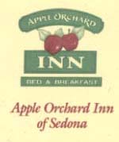
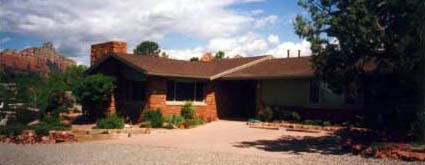
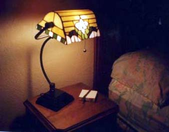

セドナ日記 〜 第１日目 98.5.4
素敵なB＆Bを見つける
「第十の予言-ポケットガイド」のセドナの地図は僕らのとっては、頼みの綱だった。 Ｂ＆Ｂは商工会議所に行けば何とかなるとずっと考えてきたので、この地図にマークされた商工会議所のマークは心強かった。が、どうも、実際運転してると地図通りではない。少し迷ってしまった。でも、そこはシンプルな町だけあって、なんとか自力で商工会議所を見つけることができた。どうしてか？ なんと掲載されていた地図は上が北になっていなかったのである。（北が右になっていた）。早速のアクシデントに可笑しくなった。これが旅行のいいところと、僕は思う。どうしてかわからないが、なにかが起こる。起こりやすくなる。「地図（いろんな深い意味で）に頼るな」というメッセージだったのかもしれない。
商工会議所の中には、B＆B、ホテル、ツアーのパンフレットが壁一面にストックされていて、情報量には事欠かない。 カウンターのおばさんにお願いして、B＆Bの一覧が載っている、冊子をもらった。山川さんが泊まったと書かれていた、B＆Bはその一覧には載っていたが、山川さんの書かれているとおり、やはり営業していなかった。
直感で決めようと思うのだが、僕も千穂もひらめきがない。 おばさんにお勧めのB＆Bを聞いたが、公平に紹介するために、どれがいいとはいえないとのことであった。 幾つか候補は上がってきてはいたので、そのB＆Bにいってみて決めることにした。セドナの町はとてもシンプルである。左右に走る84A号線と下からその84A号線にぶつかる、179号線この２つの道に、少しづつ枝葉道が付いている。アバウトだが、結構役にたった白地図を入手し、Ｂ＆Ｂ探しを開始した。
ダウンタウンから少しはなれたほうがいいかと思い、候補をしぼってそこにいってみたが、ちょっと遠すぎた。 そこからもどって、今度はダウンタウンの近くの「Apple Orchard INN」とちょっと離れた「THE LODGE AT SEDONE」にいって見ることにした。
まずはAppleにいったのだが、建物が結構いい感じだった。 ちょっと部屋を見せてもらおうとおもって、ベルを鳴らすと、ちょっと気取った化粧をしてるんだけど、とても親切なおばさん（ポーラ）が出てきた。部屋を見せてもらうと、どの部屋もすごく奥行きがある内装で、気に入ってしまった。ちょっとしたテラスがあるのだがそこから裏山の「スチームボート」という岩山が見える。朝食はこのテラスでするそうだ。暖炉のある部屋もあり、オールドアメリカな雰囲気が心地よい。千穂も気に入ってるようだった。シーズンオフでディスカウントもしてくれるということもありここに決めた。
予約なしで、やってくる人（アメリカ国内からの旅行者も含めて）は相当珍しいらしい。しかも、97年の秋からこのB＆Bのオーナーになったのだが、日本人は２組目だそうだ。
すごく、納得できる宿を見つけることができて、やっぱりセドナのエネルギーで直感が冴えたのではと思った。このあとも、いろんな所にいったが、嫌なことは全く起きなかったと思う。どの場所も、常に新鮮で感動できる場所ばかりであった。
ポーラにおすすめのレストランを教えてもらった。（この人の情報はとても有益だった）さらに夕日がきれいに見える場所として、Chapel of the Holy Cross 教会を勧めてもらった。
では、まずは教会に行こう。